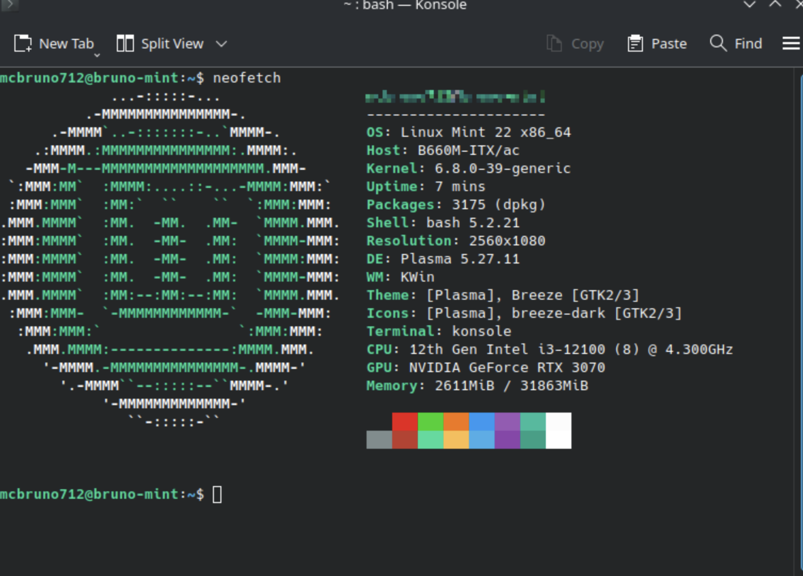

Linux Mint is my go-to recommendation for anyone moving to Linux for the first time, and it's the first thing I install when I'm not sure whether a piece of hardware is going to cooperate. When I'm skeptical about driver support or compatibility, I install Mint — it's the distribution that consistently just works.
The Cinnamon desktop is familiar enough that people coming from Windows or macOS don't feel disoriented. The installer is friendly. The default application selection is sensible. It doesn't try to be clever. These are virtues.
I have a 2009 MacBook that Apple dropped support for long ago. Linux Mint runs on it. It's not fast, but it's genuinely functional — a machine that was abandoned by its original operating system years back still boots to a working desktop and does real tasks. That kind of longevity is one of the things I value most about Linux in general, and Mint exemplifies it.
I've also been curious about Linux Mint Debian Edition (LMDE), which tracks Debian stable rather than Ubuntu LTS. The appeal is a longer support window and a slightly different relationship to the upstream packages. I haven't switched to it yet but it's on the list.
For everyday use on a machine I care about, I'm on Fedora KDE. But Linux Mint is the distribution I trust without thinking for hardware that needs to work and hardware that other distributions sometimes struggle with. It earns its reputation every time.